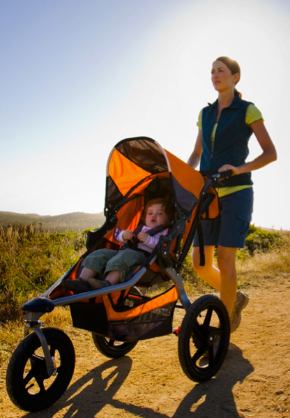

Your go-to stroller for everyday activities and not-so everyday adventures.
From the zoo to the beach to the park, the Cammers Revolution SE stroller offers sporty performance and safe, secure transport of a child as you adventure about.
Swiveling front wheel allows for superior maneuverability. Locks forward for increased stability when jogging or if the terrain turns tough.
Easy, two-step folding, lightweight frame for convenient transport and storage.
State-of-the-art, adjustable suspension system provides an exceptionally smooth ride.
Accessory Adapter allows for quick and easy attachment of Cammers Infant Car Seat Adapter or Snack Tray.
Ultra-padded, adjustable reclining seat for enhanced seating comfort. Five-point padded harness helps keep your child comfortably secure.
Multi-position canopy adjusts for protection against the elements. Large viewing window lets you keep an eye on your baby.
High-impact polymer composite wheels with pneumatic tires and tubes take on tough terrain.
Low Boy Cargo Basket provides plenty of undercarriage storage. Additional space in large seatback pocket. Internal seat pockets provide a great place for snacks and toys.
A simple twist of the front wheel tracking adjustment knob keeps you rolling straight.
When engaged, the parking brake helps secure a stopped position.
Padded handlebar for comfort; wrist strap helps you secure stroller when strolling and provides handy fold lock when folded.
Also available as a double stroller.

Revolution SE - The most versatile stoller you can buy